3D Craft
A study in modeling, texturing, lighting and composition. Thirteen renders across architecture, interiors, objects and atmosphere, all built in Blender.
Click any image to open it full screen. Use the arrows to move through the set.
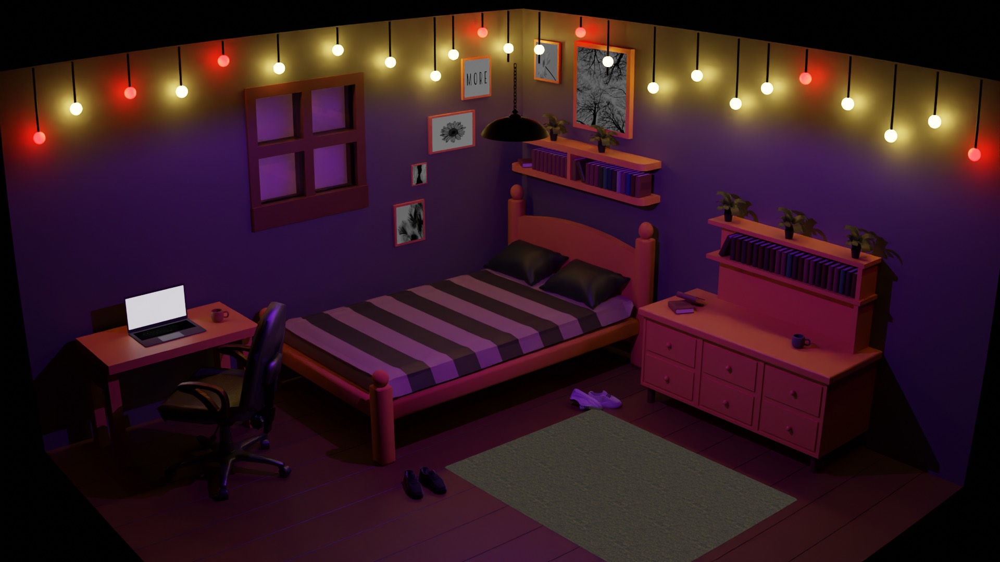
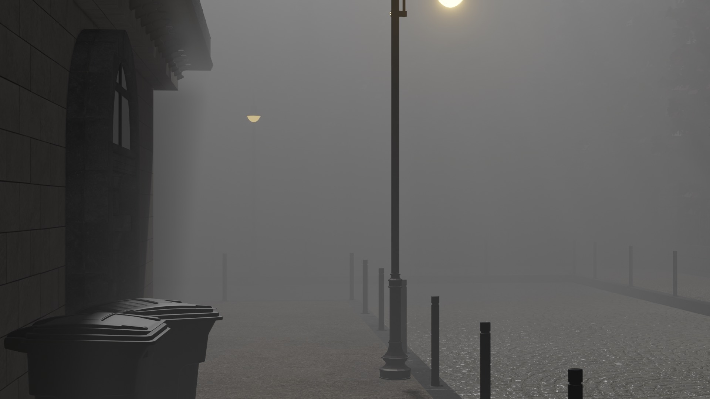
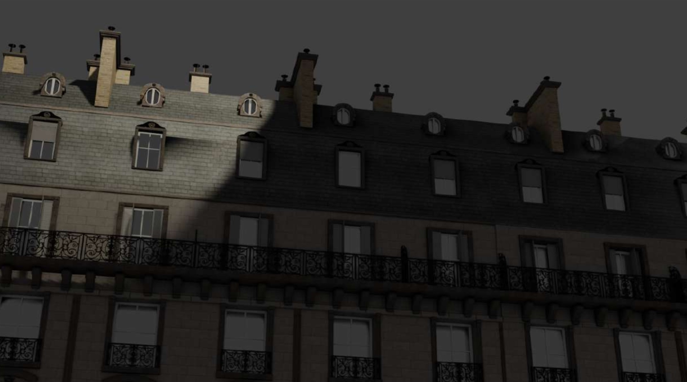
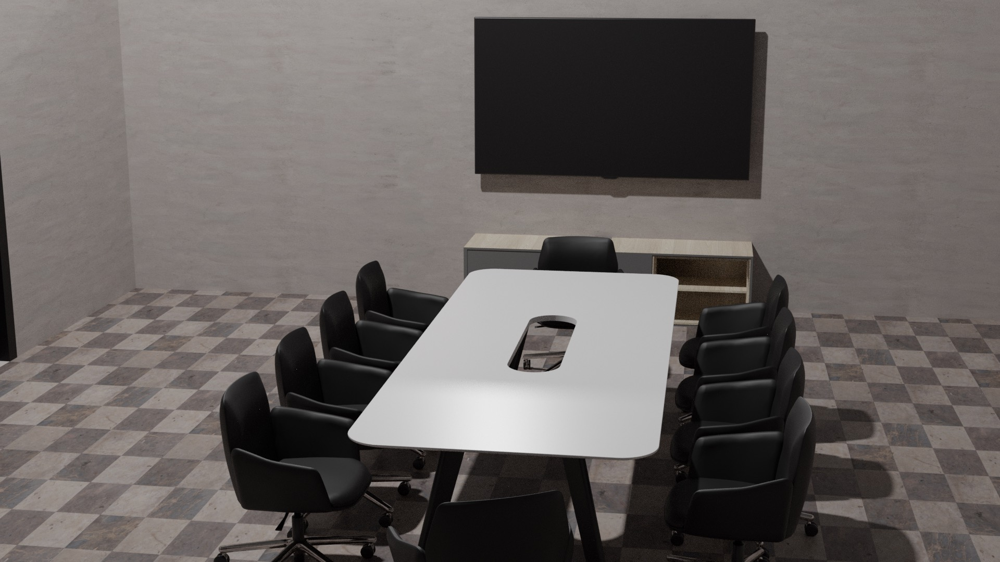
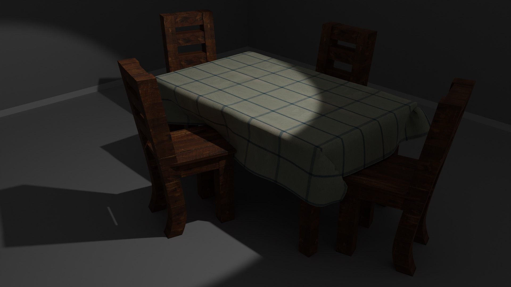
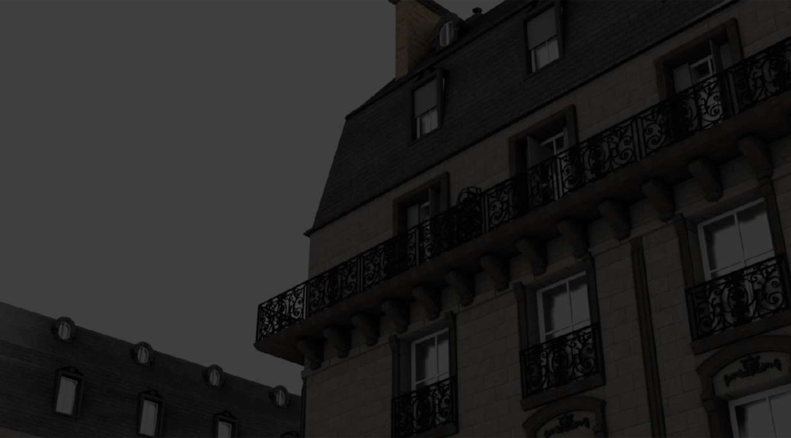
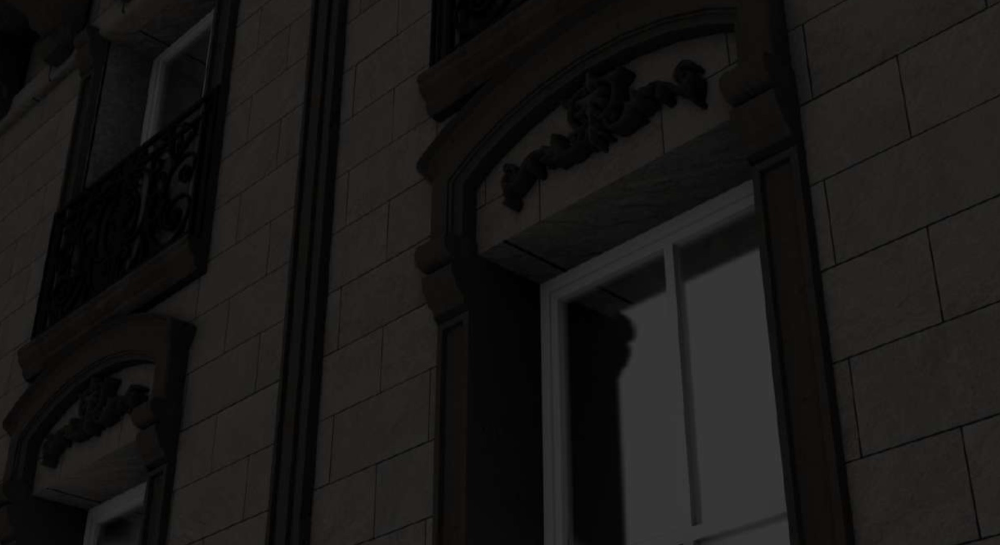
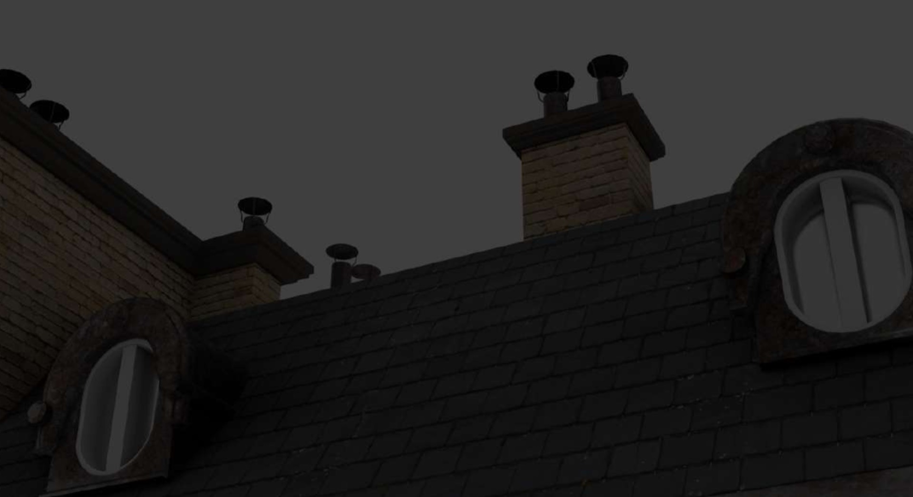
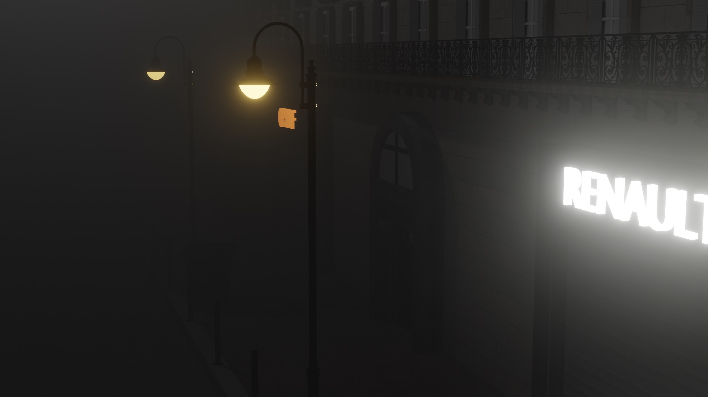
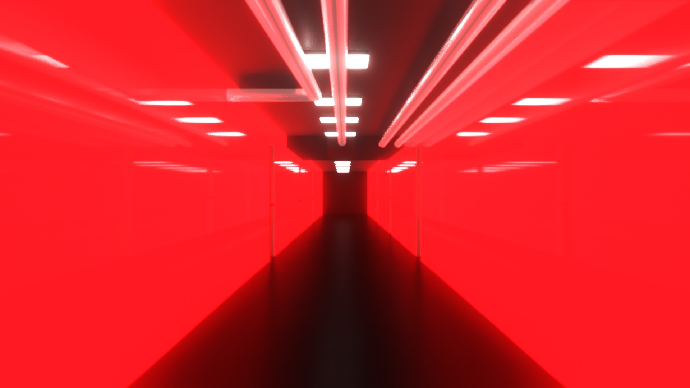
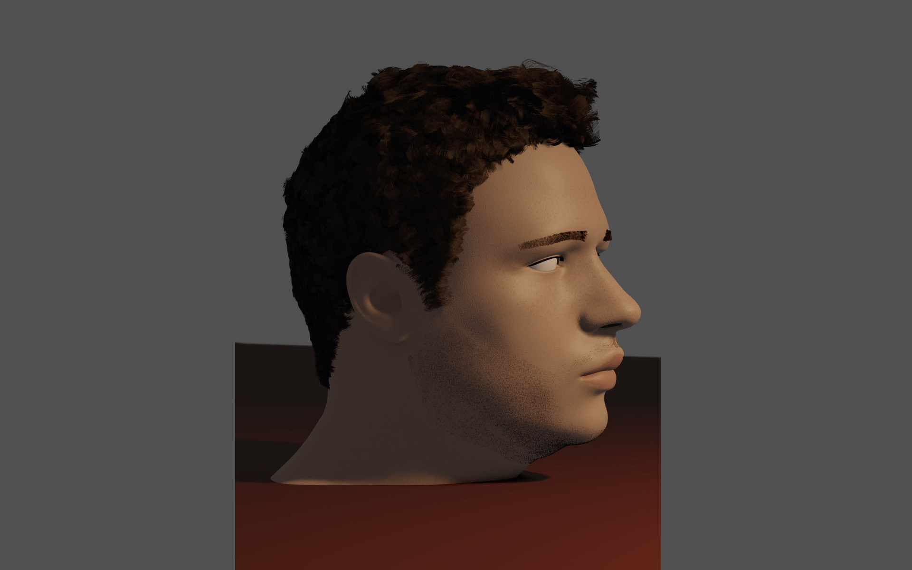
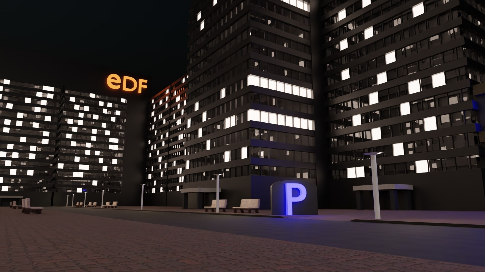
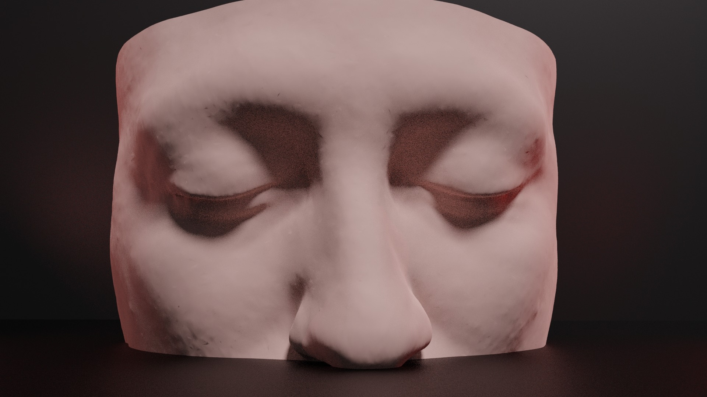
Not just a render,
a real model
A Jeep Compass 2021 modeled and textured in Blender, exported to glTF. Spin it around: the body, chrome, glass and tyres are real materials, not a flat image.
From grey box
to final frame
Every image starts as a simple block-out, then gets built up layer by layer: clean modeling, physical materials, lighting treated like a set, and a frame that says something. I use Blender end to end, from the first cube to final compositing.